3 From Institutional Server
If you’re familiar with bioinformatics, you may already have experience with high-performance computing (HPC). Migrating data from your institutional HPC to AnVIL is a lot like moving data between Google Cloud buckets. Check out the previous section for more on that.
In this example, we’ll upload some genomic data into AnVIL that is currently stored in an institutional HPC. We’ll use the Johns Hopkins HPC cluster known as Rockfish. Rockfish has interactive nodes and uses Slurm for job scheduling, like many other HPCs.
AnVIL stores data in Google Buckets, so we’ll also need to set up a workspace destination.
Buckets are the name of the containers used to store files and objects on Google Cloud. Everything you store on Google Cloud must be in a bucket. Each bucket has its own unique name and location (uniform resource identifier, or URI). When we move data files into AnVIL workspaces, we use the URI to tell AnVIL where the data should be stored.
You can read more about how data is saved in the cloud here!
This activity will vary depending on your files and HPC configuration. It might take some trial and error! In this example, we’ll copy the SARS-CoV-2 genome from our HPC to AnVIL.
Genetics
Novice: no genetics skills needed
Programming skills
Intermediate: some command line programming skills needed
What will this cost?
Most HPCs do not have egress (exporting) costs. If you follow along with this tutorial, the only additional costs will be those associated with storing the data transferred in a Google bucket (on AnVIL). The genome transferred in this activity will cost about 0.23 cents, or $0.0023 per day, according to our records in early February, 2026.
Check out the Google Cloud Console for accurate reporting of your own costs.
3.1 Step One: Create your workspace
The starting point for bringing your own data to AnVIL is the workspace. Before you can do anything, you will need to create a workspace. Once you have logged into your AnVIL account, click on “Workspaces” in the left-side menu. You can open this menu by clicking the three line icon in the upper left hand corner.
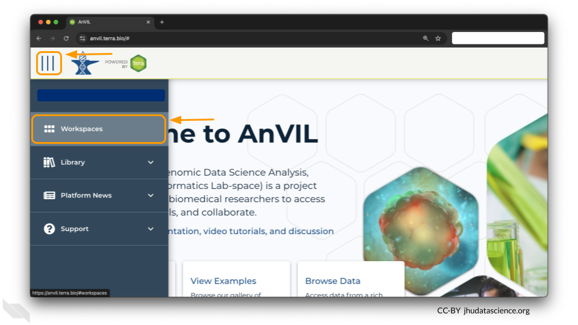
Once you have opened the workspace page, create a new workspace by clicking on the plus sign at the top.
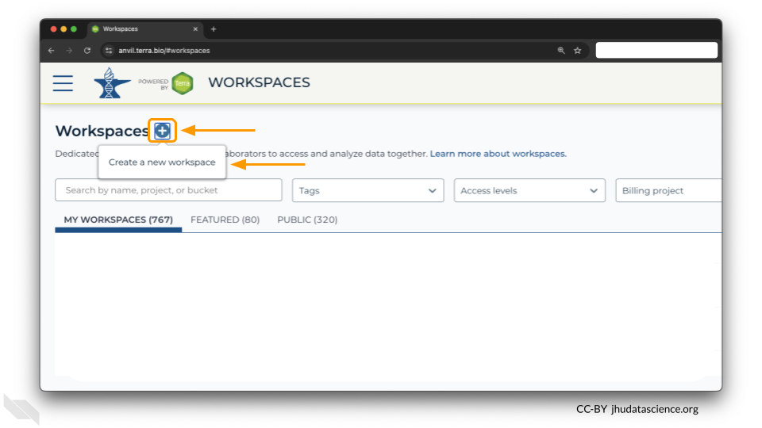
You should now see a pop-up window that lets you customize your new workspace. You will need to give your new workspace a unique name and assign it to a billing project. The “anvil-outreach” billing project is used here as an example, but you will not be able to assign it. You’ll have to use one of your own billing projects. After filling out these two fields, click the “Quick Create Workspace” button to create a workspace without enabling sharing or additional security options.
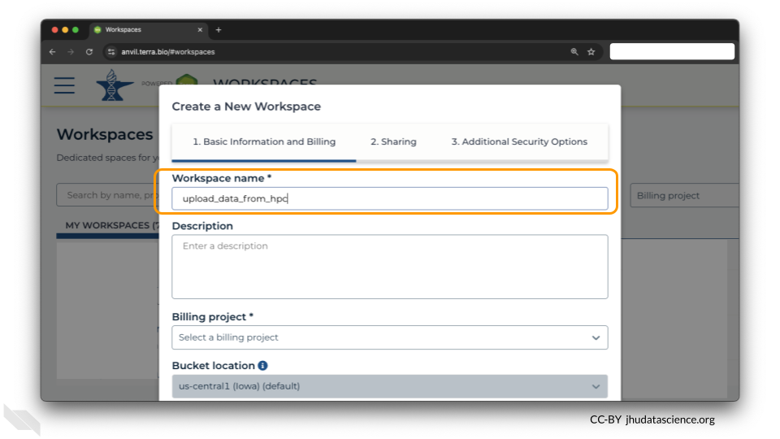
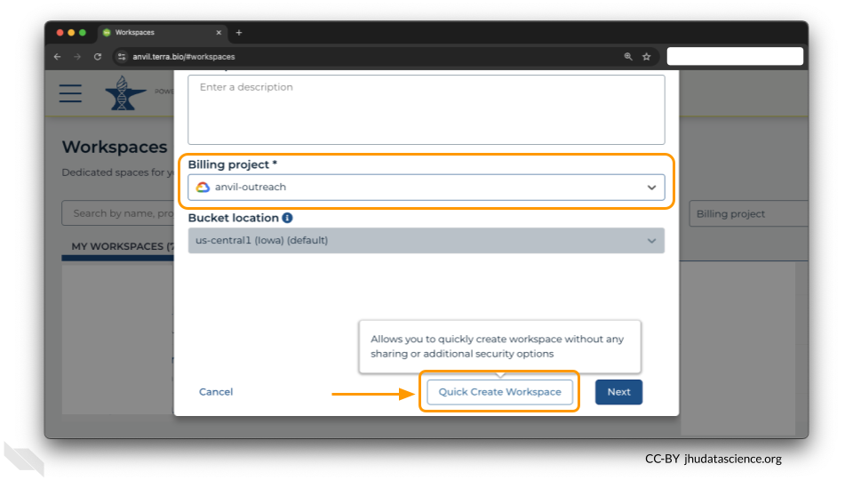
You can read about Authorization Domains for workspace security in this article in the Terra documentation.
3.2 Step Two: Connect to your HPC
We will initiate the transfer from the HPC side. You’ll need to connect to your HPC first.
This step might vary depending on your setup, but a common way to access an HPC is through ssh protocol. Diving deep into ssh is beyond the scope of this tutorial, but you might use a command like:
ssh <computer> -l <username>where <computer> is your HPC’s address and <username> is your HPC login name. For example:
ssh login.rockfish.jhu.edu -l jsmith123You’ll have a password to enter as well.
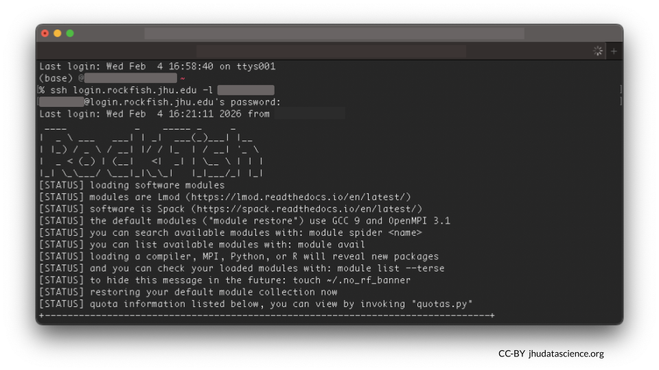
It’s important to be a good community member when sharing an HPC. Follow your institution’s best practices for where to work. For example, on Rockfish, doing work on login nodes is discouraged. We will launch an interactive node instead.
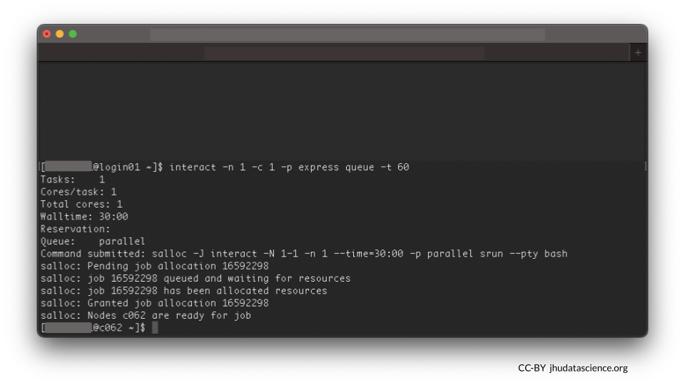
3.3 Step Three: Check for Google Cloud SDK
You will need Google Cloud SDK on your HPC to move files to AnVIL. This is software that enables file transfer. You can check to see if Google Cloud SDK tools are available by entering gcloud at the command line. If these tools are available, you will see a list of command groups:
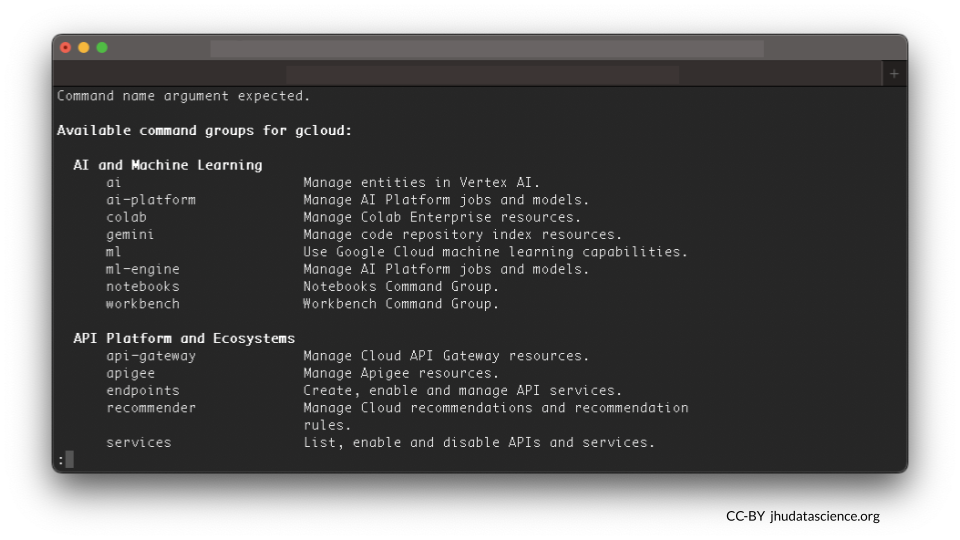
If you see something like “command not found,” you will need to install it. The code here is an example specifically for a Linux server. You might need to follow different instructions depending on your server setup.
curl -O https://dl.google.com/dl/cloudsdk/channels/rapid/downloads/google-cloud-cli-linux-x86_64.tar.gz
tar -xf google-cloud-cli-linux-x86_64.tar.gz
google-cloud-sdk/install.shYou might need to specify the path to the executable gcloud, e.g., google-cloud-sdk/bin/gcloud init. When in doubt, try testing the executable is available by entering gcloud at the command line.
3.4 Step Four: Initialize gcloud
Type in the following at the command line:
gcloud initFollow the onscreen prompts next. You will be asked to copy and paste a long link in your browser.
Go to the following link in your browser:
https://accounts.google.com/o/oauth2/auth?response....
Enter authorization code: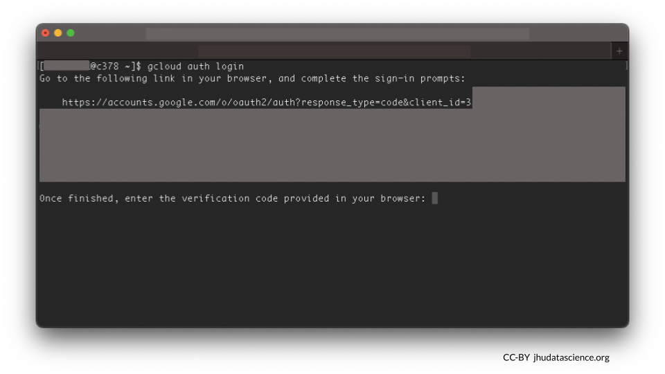
Try gcloud init first. However, if you have previously used Google Cloud on your HPC, you might need to use different commands, such as gcloud auth login. Check out the command line functions you can use with gcloud here.
Make sure to select your AnVIL account. For you, this might be an institutional account. Grant it permission to work on the command line.
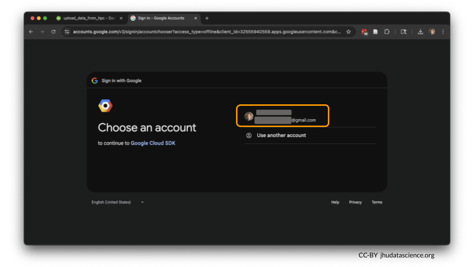
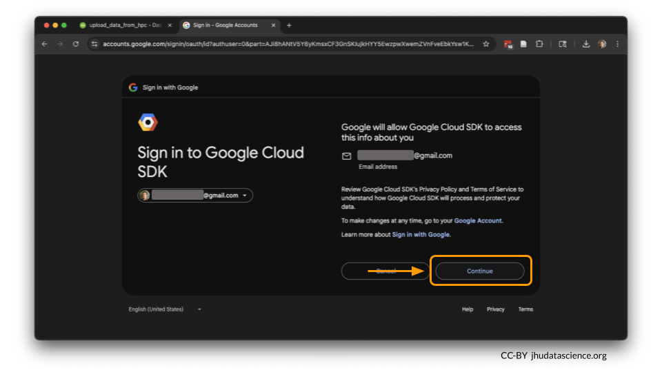
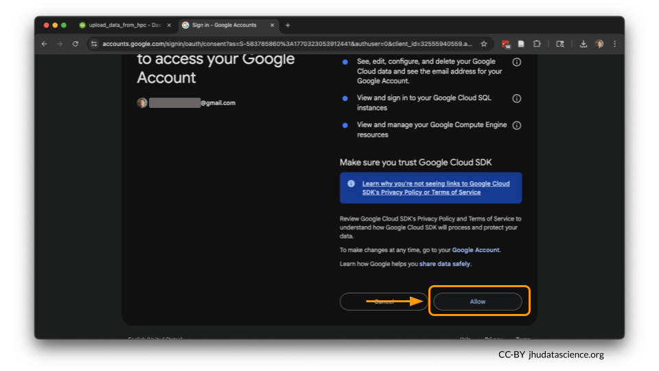
Copy the verification code and enter the authorization code to confirm Google Cloud SDK command line access.
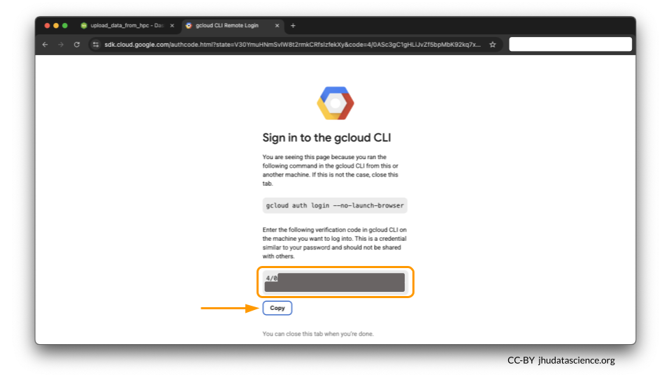
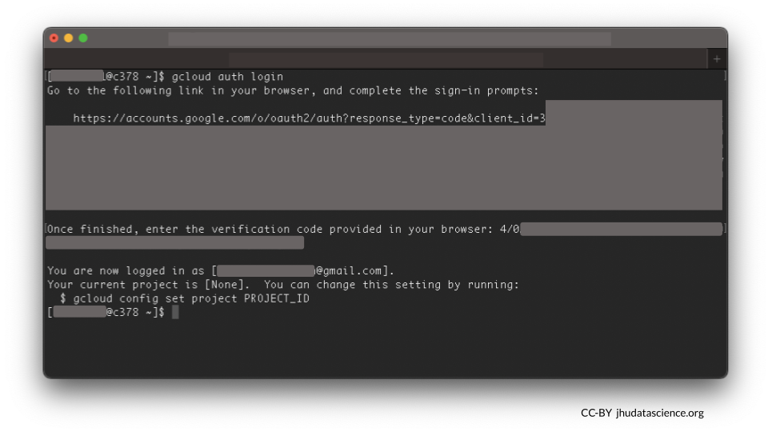
3.5 Step Five: Connect to your workspace
You will see a message like this:
[1] Enter a project ID
[2] Create a new project
[3] List projects
Please enter your numeric choice:We’ll need to retrieve the Google Project ID. Over on anvil.terra.bio, You can find this by opening your Workspace and viewing the Dashboard tab. It will look something like terra-123abcefg.
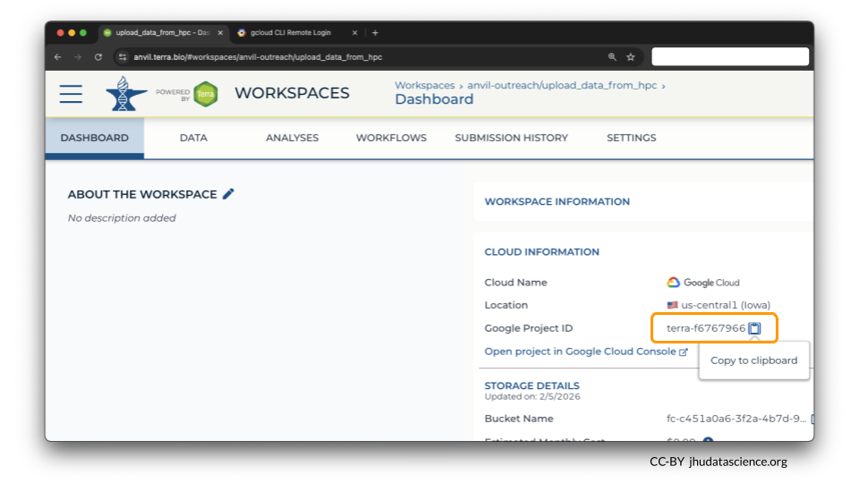
Select 1 to enter your Workspace’s Google Project ID, and paste it when prompted. When asked Do you want to configure a default Compute Region and Zone? (Y/n)?, you can type n.
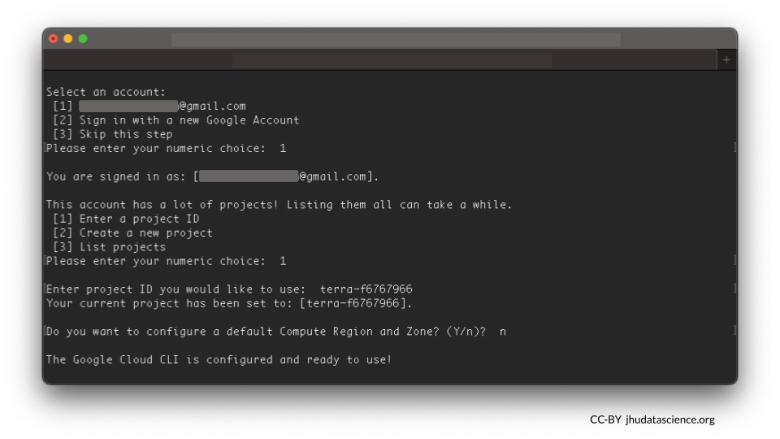
Confirm you are in the right place by typing in the following. The command should return the Bucket name.
gcloud storage ls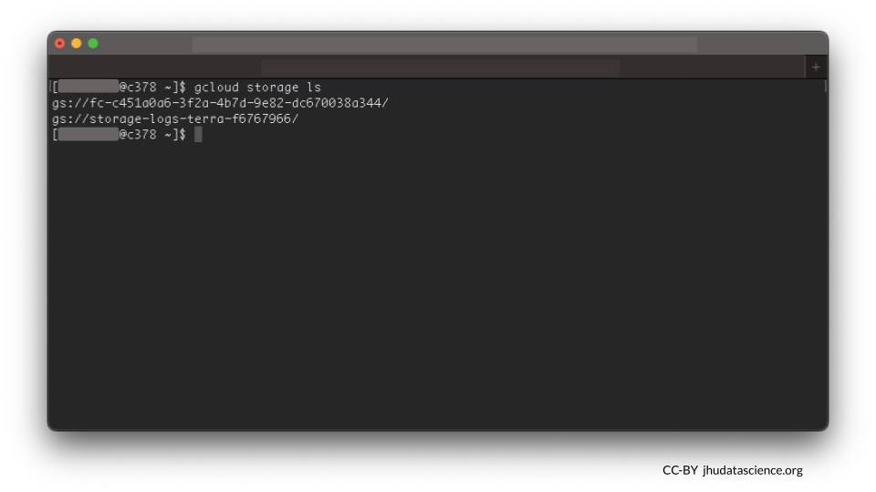
Looks good so far!
ls
This command lists the files in the current directory (your HPC).
gcloud storage ls
This command is a special version of ls that shows you what’s in a particular Google Bucket.
3.6 Step Six: Transfer file
Now you’re ready to copy data over! Let’s use ls to check what files we have in the directory my_data.
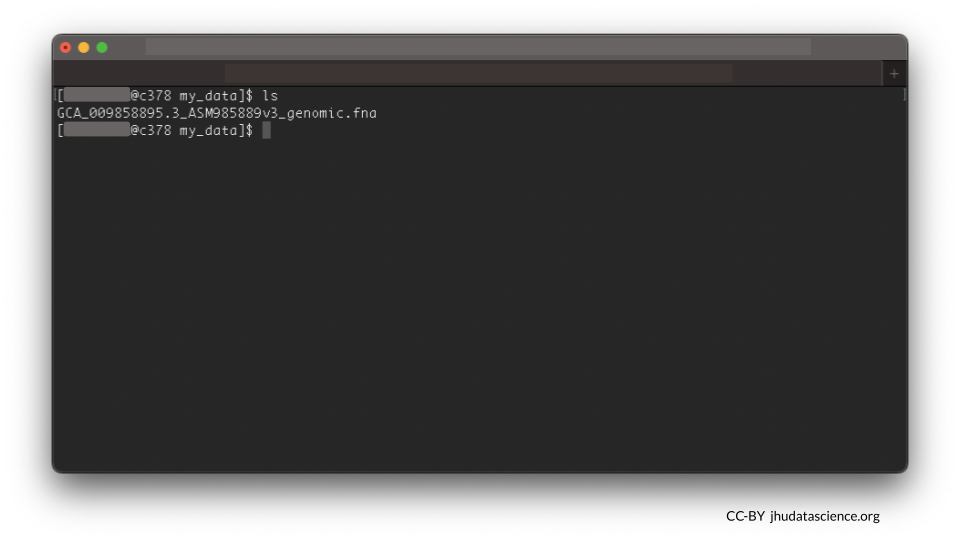
We have one file called GCA_009858895.3_ASM985889v3_genomic.fna. This is the SARS-CoV-2 genome, located here.
Use the gcloud storage cp command to copy data. In the example below, you can try replacing the GCA_009858895.3_ASM985889v3_genomic.fna with the file on your server, and replacing gs://fc-a1b2c3 with your Bucket name (displayed when you typed gcloud storage ls). You can find the Bucket name by entering gcloud storage ls or checking the Workspace and viewing the Dashboard tab.
gcloud storage cp GCA_009858895.3_ASM985889v3_genomic.fna gs://fc-a1b2c3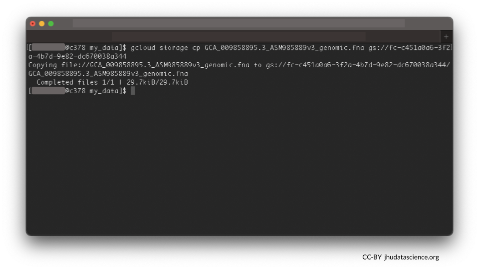
A few tips to keep in mind:
- AnVIL workspaces automatically come with a unique workspace bucket. The bucket will scale up in size (and cost) as you add data.
- Remember, In order for
gcloudto recognize the buckets, you need to addgs://to the front of their names. - If you want to move multiple files, note that the
-rflag is “recursive”, which means all files in that directory and subdirectories will be moved over.
3.7 Step Seven: Verify that files have been transferred
How do you know if your files were successfully transferred?
You can see any uploaded files by clicking the “Browse workspace files” button on the far right of the Dashboard page.
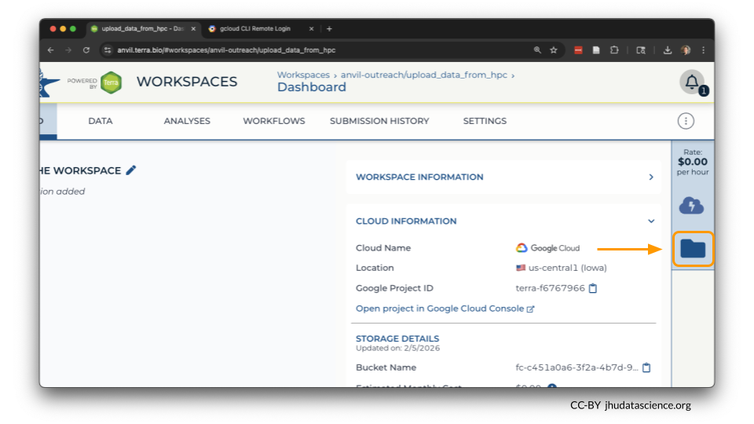
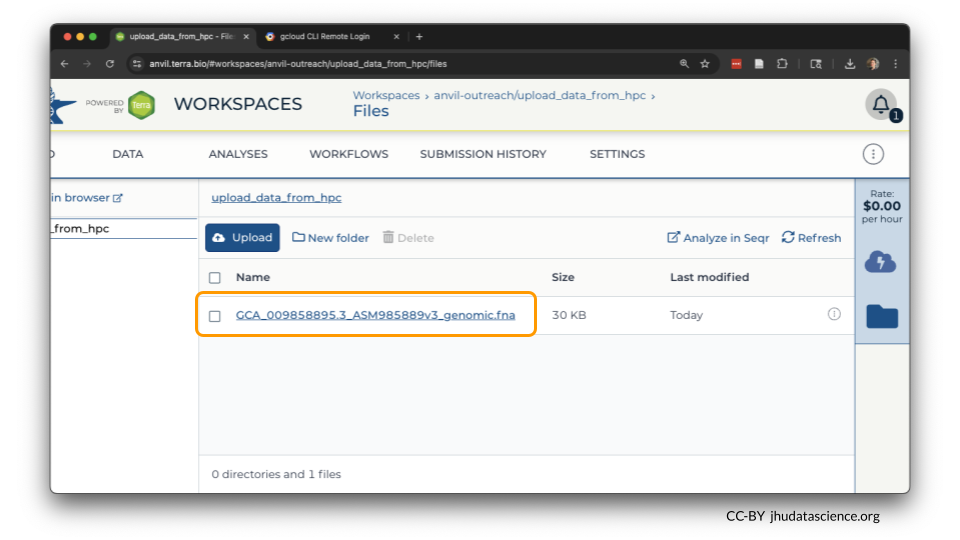
If you click on the name of the file, you can also see the details of the file.
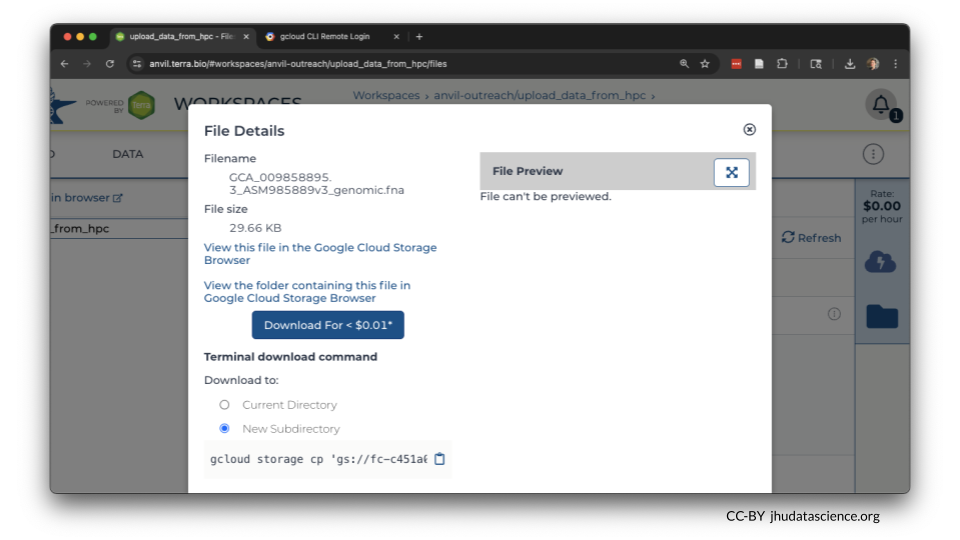
This is a good time to check that the sizes of the files you transferred match the sizes of the original files.
3.8 Summary
- Create a workspace
- Connect to your HPC
- Set up and initialize Google Cloud tools, if needed
- Run
gcloud storage cp <where_to_copy_data_from>/<file_name> <where_to_copy_data_to> - Verify that file(s) have been transferred
3.9 Additional Resources
You might wish to run a transfer as a scheduled job, using a shell script. You can find an example of a script that does this here.
If you have a lot of data, it’s a good idea to estimate how much transfer time your need. Transfer a small file first and determine your transfer rate. Learn more about estimated transfer rates to Google Cloud via AnVIL here.
Learn more about moving data to and from Google buckets here.